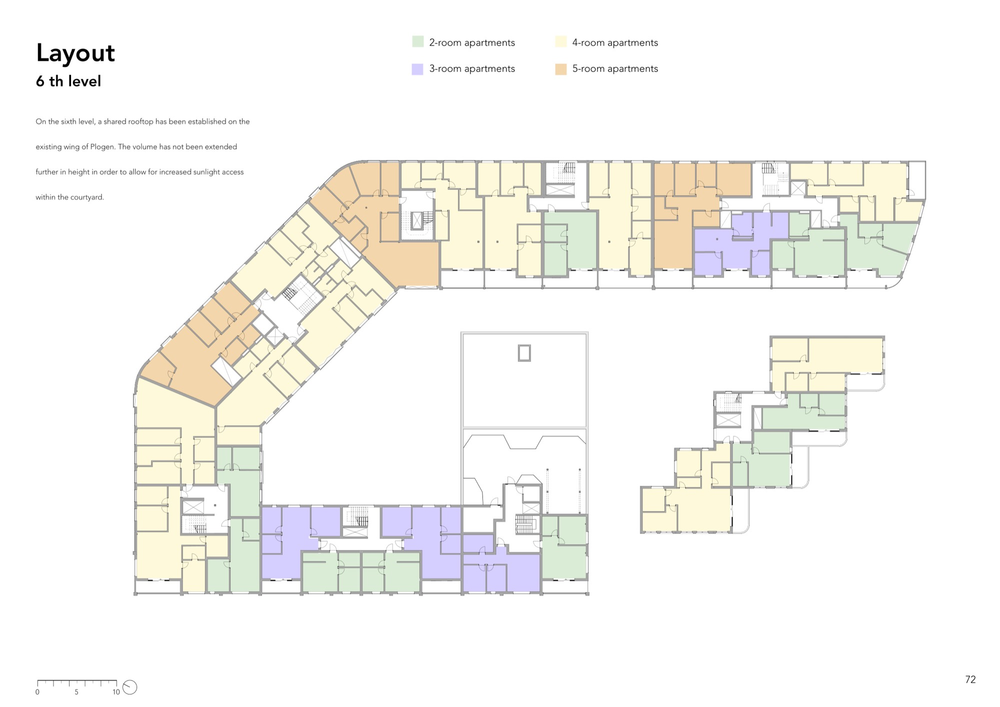
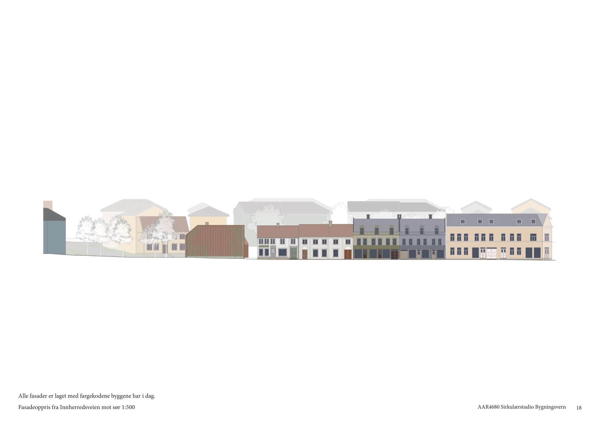
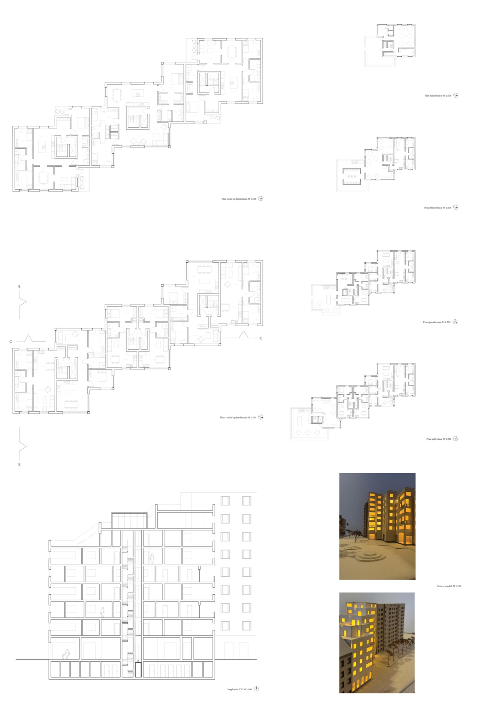
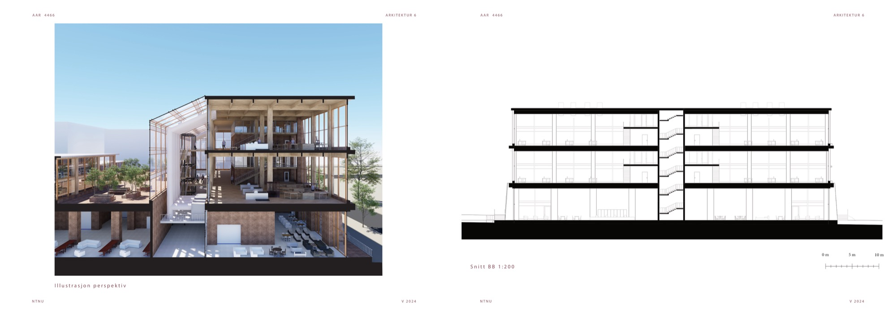
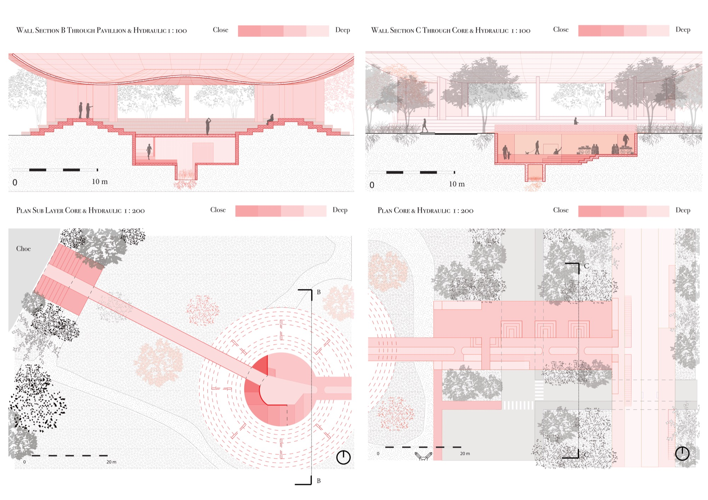
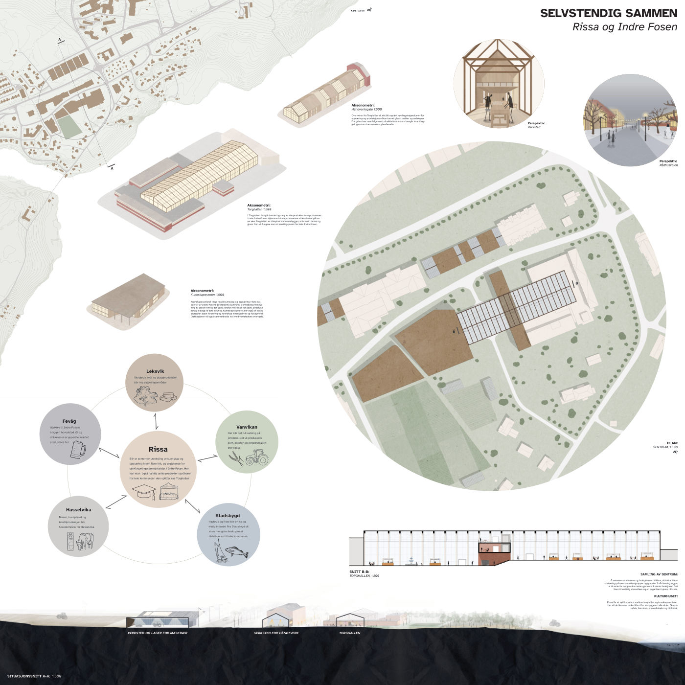
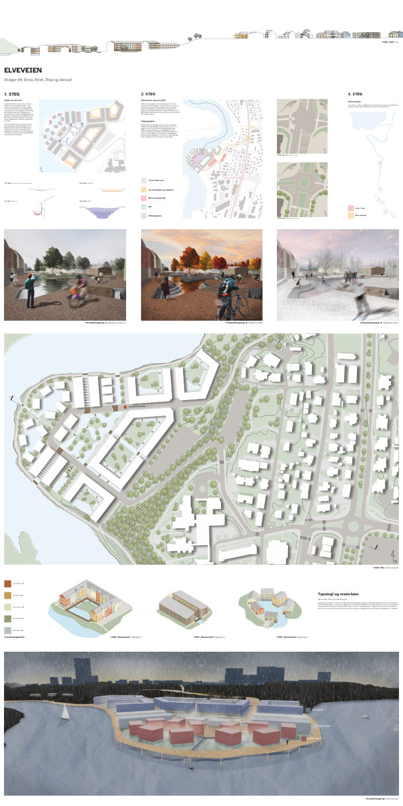
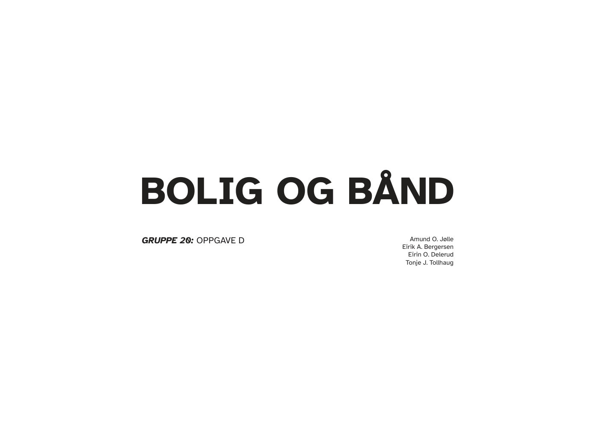

Masteroppgave
Extended — What Already Exists Still Has a Future
Diplomoppgave om transformasjon av Nydalsveien 36-38 i Oslo som
alternativ til riving. Fokus på gjenbruk, utslippsreduksjon og
kontinuitet i byutvikling.
- Master i arkitektur, NTNU (2026)
- Adaptiv gjenbruk og transformasjonsstrategi
- Ytelses- og CO2-sammenligning
Utarbeidet med Liv Linnea Bakka.
Forhåndsvisning

Se prosjekt
Bygningsvern
Giedebogården — Co-Housing Transformation
Sirkulærstudio-prosjekt som undersøker hvordan historiske trehus
kan gis nytt liv i en urban kontekst, med fokus på vern, landskap
og sosial boligkvalitet.
- Bygningsvern, høst 2025
- Konsept for flytting og gjenbruk
- Detaljerte planer, snitt og modellstudier
Utarbeidet med Helena Elizabeth McClimans Bjerke.
Forhåndsvisning

Se prosjekt
By-bolig
Mellomtrappen — Infill Housing
Infill-boligprosjekt på Elgeseter i Trondheim. Konseptet kobler
to nabobygg med trinnvise volumer og aktiv førsteetasje.
- By-bolig, 2022
- 26 boenheter
- Fellesarealer og urban tilgjengelighet
Utarbeidet med Vegard Josefsen.
Forhåndsvisning

Se prosjekt
Store bygninger
Møbelfabrikk på Tempe
Vertikal produksjonsidé for sirkulære møbelsystemer i tett urban
kontekst. Prosjektet er bygget rundt synlig produksjon og
materialbank-prinsipper.
- Store bygninger, 2024
- Sirkulærøkonomi i arkitektur
- Integrert produksjon og utsalg
Forhåndsvisning

Se prosjekt
Landskap
Landskapsprosjekt — Museumspaviljong
Individuelt landskapsforslag med sirkulær paviljong og nedsenket
romsekvens for kulturarrangementer.
- Individuelt prosjekt
- Kobling mellom bygg og landskap
- Fleksibelt for utstilling og arrangement
Forhåndsvisning

Se prosjekt
Byplanlegging
Selvstendig Sammen — Rissa og Indre Fosen
Regional utviklingsstrategi for Rissa og Indre Fosen, der
tettstedene styrker egne satsingsområder og samtidig
samarbeider som én region.
- Regional planlegging og stedsutvikling
- Satsingsområder på tvers av grender
- Nærings- og kunnskapsutveksling
Utarbeidet med Amund O. Jølle, Eirik A. Bergersen, Eirin O.
Delerud og Tonje J. Tollhaug.
Forhåndsvisning

Se prosjekt
Byplanlegging
Elveveien — Typologi og materialer
Byutvikling langs elva i Trondheim med fokus på menneskelig
skala, stedstilhørighet og lokal materialbruk.
- Elvebebyggelse og bryggetypologi
- Menneskelig skala og stedstilhørighet
- Lokale materialer
Utarbeidet med Amund O. Jølle, Eirik A. Bergersen, Eirin O.
Delerud og Tonje J. Tollhaug.
Forhåndsvisning

Se prosjekt
Byplanlegging
Bolig og Bånd
Boligprosjekt om fellesskap og sosiale bånd i nabolaget
(Gruppe 20, Oppgave D), med tun som samarbeider om tilbud til
bydelen.
- Sosial bærekraft og tilhørighet
- Tun og fellesskap
- Nabolagsskala
Utarbeidet med Amund O. Jølle, Eirik A. Bergersen, Eirin O.
Delerud og Tonje J. Tollhaug.
Forhåndsvisning

Se prosjekt